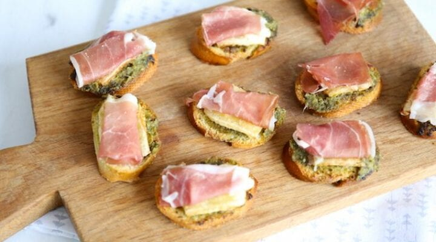

Bruschetta met serranoham
Dit heerlijke voorgerecht is makkelijk en snel te bereiden en smaak heerlijk.
Ingrediënten
- 2 afbak pistoletjes of 1 klein stokbrood
- 1 stuk brie
- pesto
- 6 plakjes serranoham
Bereidingswijze
- verwarm de over op 220 graden.
- Snij de afbak broodjes in stukjes van 2 centimeter.
- Besmeer de plakjes met een lagje pesto.
- Snij ook de brie in plakjes en leg deze om de afbak broodjes.
- Doe de broodjes in de voorverwarmde oven voor ongeveer 10 min.
- Snij ondertussen de serranoham in tweeën.
- Wanner de broodjes mooi goudbruin zijn mogen ze uit de oven en de ham mag er op.

Wil je ook nog andere recpeten proberen?
Gehaktbrood
Nagerecht